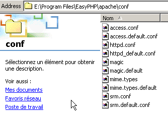
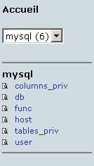
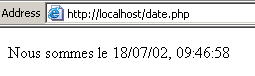
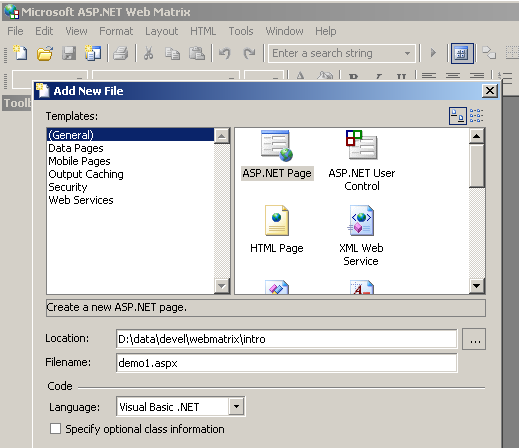

10. Appendices - Web Development Tools
Here we indicate where to find and how to install free tools for web development in Java, PHP, ASP, and ASP.NET. Some tools have been updated, and the instructions provided here may no longer apply to the most recent versions. Readers will need to adapt accordingly... :
- a recent browser capable of displaying XML. The examples in this course have been tested with Internet Explorer 6.
- A recent JDK (Java Development Kit). The JDK includes the Java 1.4 browser plug-in, which allows browsers to display Java applets using the JDK 1.4.
- A Java development environment for writing Java servlets. Here, we use JBuilder 7.
- Web servers: Apache, PWS (Personal Web Server, Cassini), Tomcat.
- Apache can be used for developing web applications in PERL (Practical Extracting and Reporting Language) or PHP (Personal Home Page)
- PWS can be used for developing web applications in ASP (Active Server Pages) or PHP on Windows platforms. Cassini supports development in ASP.NET.
- Tomcat is used for developing web applications using Java servlets or JSP (Java Server Pages)
- A database management system: MySQL
- EasyPHP: a tool that bundles the Apache web server, the PHP language, and the MySQL DBMS
10.1. Web Servers, Browsers, Scripting Languages
- Major Web Servers
- Apache (Linux, Windows)
- Internet Information Server (IIS) (NT), Personal Web Server (PWS) (Windows 9x), Cassini (.NET platforms)
- Major browsers
- Internet Explorer (Windows)
- Netscape (Linux, Windows)
- Mozilla (Linux, Windows)
- Opera (Linux, Windows)
- Server-side scripting languages
- VBScript (IIS, PWS)
- JavaScript (IIS, PWS)
- Perl (Apache, IIS, PWS)
- PHP (Apache, IIS, PWS)
- Java (Apache, Tomcat)
- .NET languages
- Browser-side scripting languages
- VBScript (IE)
- JavaScript (IE, Netscape)
- PerlScript (IE)
- Java (IE, Netscape)
10.2. Where to find the tools
http://www.netscape.com/ (downloads link) | |
http://www.microsoft.com/windows/ie/default.asp | |
http://www.mozilla.org | |
http://www.php.net | |
http://www.activestate.com | |
http://msdn.microsoft.com/scripting (follow the Windows Script link) | |
http://java.sun.com/ | |
http://www.apache.org/ | |
included in the NT 4.0 Option Pack for Windows 95 included on the Windows 98 CD http://www.microsoft.com/ntserver/nts/downloads/recommended/NT4OptPk/win95.asp | |
http://www.microsoft.com | |
http://jakarta.apache.org/tomcat/ | |
http://www.borland.com/jbuilder/ | |
http://www.easyphp.org/ | |
http://www.asp.net |
10.3. EasyPHP
This application is very convenient because it includes the following in a single package:
- the Apache web server
- a PHP interpreter
- the MySQL DBMS (3.23.x)
- a MySQL administration tool: PhpMyAdmin
The installation application looks like this:

Installing EasyPHP is straightforward, and a directory structure is created in the file system:

the application executable | |
the Apache server directory structure | |
the MySQL database directory | |
the phpMyAdmin application directory structure | |
the PHP directory structure | |
root of the directory tree for web pages served by the EasyPHP Apache server | |
directory where you can place CGI scripts for the Apache server |
The main advantage of EasyPHP is that the application comes preconfigured. Thus, Apache, PHP, and MySQL are already configured to work together. When you launch EasyPHP via its shortcut in the Programs menu, an icon appears in the bottom-right corner of the screen.
 |
The "E" with a red dot should be flashing if the Apache web server and the MySQL database are up and running. Right-clicking on it opens a menu with the following options:

The Administration option allows you to configure settings and perform functionality tests:

10.3.1. al configuration of the PHP interpreter
The PHP Info button should allow you to verify that the Apache-PHP combination is working properly: a PHP information page should appear:

The Extensions button displays a list of installed PHP extensions. These are actually function libraries.

The screen above shows, for example, that the functions required to use the MySQL database are present.
The "Settings" button displays the username and password for the MySQL database administrator.

Using the MySQL database is beyond the scope of this quick overview, but it is clear here that a password should be set for the database administrator.
10.3.2. Apache Administration
Still on the EasyPHP administration page, the "Your Aliases" link allows you to define aliases associated with a directory. This allows you to place web pages outside the www directory in the EasyPHP directory tree.

If, on the page above, you enter the following information:

and click the "Validate" button, the following lines are added to the <easyphp>\apache\conf\httpd.conf file:
Alias /st/ "e:/data/serge/web/"
<Directory "e:/data/serge/web">
Options FollowSymLinks Indexes
AllowOverride None
Order deny,allow
allow from 127.0.0.1
deny from all
</Directory>
<easyphp> refers to the EasyPHP installation directory. httpd.conf is the Apache server configuration file. You can therefore achieve the same result by editing this file directly. Changes to the httpd.conf file are normally applied immediately by Apache. If this is not the case, you will need to stop and restart the server, using the EasyPHP icon:
To finish our example, we can now place web pages in the directory tree e:\data\serge\web:
and request this page using the alias st:

In this example, the Apache server has been configured to run on port 81. Its default port is 80. This is controlled by the following line in the httpd.conf file we’ve already seen:
10.3.3. The Apache configuration file [htpd.conf]
When you want to fine-tune Apache, you have to manually edit its httpd.conf configuration file, located here in the <easyphp>\apache\conf folder:

Here are a few key points to note in this configuration file:
| role |
indicates the folder containing the Apache directory tree | |
specifies which port the web server will use. Typically, this is 80. By changing this line, you can have the web server run on a different port | |
the email address of the Apache server administrator | |
the name of the machine on which the Apache server is running | |
the installation directory of the Apache server. When relative file names appear in the configuration file, they are relative to this directory. | |
the root directory of the tree of web pages served by the server. Here, the URL http://machine/rep1/fic1.html will correspond to the file E:\Program Files\EasyPHP\www\rep1\fic1.html | |
sets the properties of the previous folder | |
logs folder, so effectively <ServerRoot>\logs\error.log: E:\Program Files\EasyPHP\apache\logs\error.log. This is the file to check if you find that the Apache server is not working. | |
E:\Program Files\EasyPHP\cgi-bin will be the root of the directory tree where you can place CGI scripts. Thus, the URL http://machine/cgi-bin/rep1/script1.pl will be the URL for the CGI script E:\Program Files\EasyPHP\cgi-bin\rep1\script1.pl. | |
sets the properties of the folder above | |
Lines for loading the modules that allow Apache to work with PHP4. | |
sets the file extensions to be treated as PHP files |
10.3.4. MySQL Administration with PhpMyAdmin
On the EasyPHP administration page, click the PhpMyAdmin button:

The drop-down list under Home displays the current databases. |  |
The number in parentheses is the number of tables. If you select a database, its tables are displayed: |  |
The web page offers a number of operations on the database:

If you click the View User link:

There is only one user here: root, who is the MySQL administrator. By following the Edit link, you could change their password, which is currently blank—a practice not recommended for an administrator. We won’t go into further detail about PhpMyAdmin, as it is a feature-rich tool that would require several pages to cover fully.
10.4. PHP
We have seen how to obtain PHP through the EasyPHP application. To obtain PHP directly, go to the website http://www.php.net. PHP is not limited to web use. It can be used as a scripting language on Windows. Create the following script and save it as date.php:
<?
// script php affichant l'heure
$maintenant=date("j/m/y, H:i:s",time());
echo "Nous sommes le $maintenant";
?>
In a DOS window, navigate to the directory containing [date.php] and run it:
dos>"e:\program files\easyphp\php\php.exe" date.php
X-Powered-By: PHP/4.2.0
Content-type: text/html
Nous sommes le 18/07/02, 09:31:01
10.5. PERL
It is best if Internet Explorer is already installed. If it is present, Active Perl will configure it to accept PERL scripts in HTML pages, which will be executed by IE itself on the client side. The Active Perl website is at the URL http://www.activestate.comA installation, PERL will be installed in a directory we will call <perl>. It contains the following directory structure:
DEISL1 ISU 32 403 23/06/00 17:16 DeIsL1.isu
BIN <REP> 23/06/00 17:15 bin
LIB <REP> 23/06/00 17:15 lib
HTML <REP> 23/06/00 17:15 html
EG <REP> 23/06/00 17:15 eg
SITE <REP> 23/06/00 17:15 site
HTMLHELP <REP> 28/06/00 18:37 htmlhelp
The executable perl.exe is located in <perl>\bin. Perl is a scripting language that runs on Windows and Unix. It is also used in web programming. Let’s write our first script:
# script PERL affichant l'heure
# modules
use strict;
# programme
my ($secondes,$minutes,$heure)=localtime(time);
print "Il est $heure:$minutes:$secondes\n";
Save this script to a file named heure.pl. Open a DOS window, navigate to the directory containing the script, and run it:
10.6. VBScript, JavaScript, PerlScript
These are scripting languages for Windows. They can run in various environments such as
- Windows Scripting Host for direct use in Windows, particularly for writing system administration scripts
- Internet Explorer. It is then used within HTML pages, adding a level of interactivity that cannot be achieved with HTML alone.
- Internet Information Server (IIS), Microsoft’s web server on NT/2000, and its equivalent, Personal Web Server (PWS), on Win9x. In this case, VBScript is used for server-side web programming, a technology called ASP (Active Server Pages) by Microsoft.
Download the installation file from the URL: http://msdn.microsoft.com/scripting and follow the Windows Script links. The following are installed:
- the Windows Scripting Host container, which supports various scripting languages such as VBScript and JavaScript, as well as others like PerlScript, which is included with Active Perl.
- a VBScript interpreter
- a JavaScript interpreter
Let’s run a few quick tests. Let’s build the following VBScript program:
' a class
class personne
Dim nom
Dim age
End class
' creation of a person object
Set p1=new personne
With p1
.nom="dupont"
.age=18
End With
' display properties person p1
With p1
wscript.echo "nom=" & .nom
wscript.echo "age=" & .age
End With
This program uses objects. Let's call it objects.vbs (the .vbs extension indicates a VBScript file). Navigate to the directory where it is located and run it:
dos>cscript objets.vbs
Microsoft (R) Windows Script Host Version 5.6
Copyright (C) Microsoft Corporation 1996-2001. All rights reserved.
nom=dupont
age=18
Now let's build the following JavaScript program that uses arrays:
// tableau dans un variant
// tableau vide
tableau=new Array();
affiche(tableau);
// tableau croît dynamiquement
for(i=0;i<3;i++){
tableau.push(i*10);
}
// affichage tableau
affiche(tableau);
// encore
for(i=3;i<6;i++){
tableau.push(i*10);
}
affiche(tableau);
// tableaux à plusieurs dimensions
WScript.echo("-----------------------------");
tableau2=new Array();
for(i=0;i<3;i++){
tableau2.push(new Array());
for(j=0;j<4;j++){
tableau2[i].push(i*10+j);
}//for j
}// for i
affiche2(tableau2);
// fin
WScript.quit(0);
// ---------------------------------------------------------
function affiche(tableau){
// affichage tableau
for(i=0;i<tableau.length;i++){
WScript.echo("tableau[" + i + "]=" + tableau[i]);
}//for
}//function
// ---------------------------------------------------------
function affiche2(tableau){
// affichage tableau
for(i=0;i<tableau.length;i++){
for(j=0;j<tableau[i].length;j++){
WScript.echo("tableau[" + i + "," + j + "]=" + tableau[i][j]);
}// for j
}//for i
}//function
This program uses arrays. Let's call it arrays.js (the .js suffix indicates a JavaScript file). Navigate to the directory where it is located and run it:
dos>cscript tableaux.js
Microsoft (R) Windows Script Host Version 5.6
Copyright (C) Microsoft Corporation 1996-2001. Tous droits réservés.
tableau[0]=0
tableau[1]=10
tableau[2]=20
tableau[0]=0
tableau[1]=10
tableau[2]=20
tableau[3]=30
tableau[4]=40
tableau[5]=50
-----------------------------
tableau[0,0]=0
tableau[0,1]=1
tableau[0,2]=2
tableau[0,3]=3
tableau[1,0]=10
tableau[1,1]=11
tableau[1,2]=12
tableau[1,3]=13
tableau[2,0]=20
tableau[2,1]=21
tableau[2,2]=22
tableau[2,3]=23
One last example in PerlScript to finish up. You must have Active Perl installed to access PerlScript.
<job id="PERL1">
<script language="PerlScript">
# du Perl classique
%dico=("maurice"=>"juliette","philippe"=>"marianne");
@cles= keys %dico;
for ($i=0;$i<=$#cles;$i++){
$cle=$cles[$i];
$valeur=$dico{$cle};
$WScript->echo ("clé=".$cle.", valeur=".$valeur);
}
# du perlscript utilisant les objets Windows Script
$dico=$WScript->CreateObject("Scripting.Dictionary");
$dico->add("maurice","juliette");
$dico->add("philippe","marianne");
$WScript->echo($dico->item("maurice"));
$WScript->echo($dico->item("philippe"));
</script>
</job>
This program demonstrates the creation and use of two dictionaries: one in the classic Perl style, the other using the Windows Script Scripting Dictionary object. Let’s save this code to the file dico.wsf (wsf is the file extension for Windows Script files). Navigate to the program’s folder and run it:
dos>cscript dico.wsf
Microsoft (R) Windows Script Host Version 5.6
Copyright (C) Microsoft Corporation 1996-2001. Tous droits réservés.
clé=philippe, valeur=marianne
clé=maurice, valeur=juliette
juliette
marianne
PerlScript can access objects from the container in which it runs. In this case, those were objects from the Windows Script container. In the context of web programming, VBScript, JavaScript, and PerlScript scripts can be executed either within the IE browser or on a PWS or IIS server. If the script is somewhat complex, it may be wise to test it outside the web context, within the Windows Script container as previously discussed. This way, you can only test the script’s functions that do not use browser- or server-specific objects. Even with this limitation, this approach remains useful because debugging scripts running within web servers or browsers is generally quite impractical.
10.7. JAVA
Java is available at the URL: http://www.sun.com and is installed in a directory structure called <java> that contains the following elements:
22/05/2002 05:51 <DIR> .
22/05/2002 05:51 <DIR> ..
22/05/2002 05:51 <DIR> bin
22/05/2002 05:51 <DIR> jre
07/02/2002 12:52 8 277 README.txt
07/02/2002 12:52 13 853 LICENSE
07/02/2002 12:52 4 516 COPYRIGHT
07/02/2002 12:52 15 290 readme.html
22/05/2002 05:51 <DIR> lib
22/05/2002 05:51 <DIR> include
22/05/2002 05:51 <DIR> demo
07/02/2002 12:52 10 377 848 src.zip
11/02/2002 12:55 <DIR> docs
In the bin directory, you will find javac.exe, the Java compiler, and java.exe, the Java Virtual Machine. You can perform the following tests:
- Write the following script:
//java program displaying the time
import java.io.*;
import java.util.*;
public class heure{
public static void main(String arg[]){
// retrieve date & time
Date maintenant=new Date();
// we display
System.out.println("Il est "+maintenant.getHours()+
":"+maintenant.getMinutes()+":"+maintenant.getSeconds());
}//hand
}//class
- Save this program as heure.java. Open a DOS window. Navigate to the directory containing the heure.java file and compile it:
dos>c:\jdk1.3\bin\javac heure.java
Note: heure.java uses or overrides a deprecated API.
Note: Recompile with -deprecation for details.
In the command above, [c:\jdk1.3\bin\javac] must be replaced with the exact path to the javac.exe compiler. You should obtain a file named heure.class in the same directory as heure.java; this is the program that will now be executed by the java.exe virtual machine.
- Run the program:
In the command above, [c:\jdk1.3\bin\java] must be replaced with the exact path to the Java virtual machine [java.exe].
10.8. Apache Server
We have seen that the Apache server can be obtained with the EasyPHP application. To get it directly, go to the Apache website: http://www.apache.org. The installation creates a directory structure containing all the files necessary for the server. Let’s call this directory <apache>. It contains a directory structure similar to the following:
UNINST ISU 118 805 23/06/00 17:09 Uninst.isu
HTDOCS <REP> 23/06/00 17:09 htdocs
APACHE~1 DLL 299 008 25/02/00 21:11 ApacheCore.dll
ANNOUN~1 3 000 23/02/00 16:51 Announcement
ABOUT_~1 13 197 31/03/99 18:42 ABOUT_APACHE
APACHE EXE 20 480 25/02/00 21:04 Apache.exe
KEYS 36 437 20/08/99 11:57 KEYS
LICENSE 2 907 01/01/99 13:04 LICENSE
MAKEFI~1 TMP 27 370 11/01/00 13:47 Makefile.tmpl
README 2 109 01/04/98 6:59 README
README NT 3 223 19/03/99 9:55 README.NT
WARNIN~1 TXT 339 21/09/98 13:09 WARNING-NT.TXT
BIN <REP> 23/06/00 17:09 bin
MODULES <REP> 23/06/00 17:09 modules
ICONS <REP> 23/06/00 17:09 icons
LOGS <REP> 23/06/00 17:09 logs
CONF <REP> 23/06/00 17:09 conf
CGI-BIN <REP> 23/06/00 17:09 cgi-bin
PROXY <REP> 23/06/00 17:09 proxy
INSTALL LOG 3 779 23/06/00 17:09 install.log
Apache configuration files directory | |
Apache log files directory (monitoring) | |
Apache executables |
10.8.1. Configuration
In the <Apache>\conf directory, you will find the following files: httpd.conf, srm.conf, access.conf. In the latest versions of Apache, these three files have been combined into httpd.conf. We have already covered the key points of this configuration file. In the following examples, the Apache version of EasyPHP was used for testing, and therefore its configuration file. In this file, DocumentRoot, which designates the root of the web page directory tree, is e:\program files\easyphp\www.
10.8.2. PHP - Apache Link
To test, create the file intro.php with the following single line:
and place it in the root directory of the Apache server (DocumentRoot above). Request the URL http://localhost/intro.php. You should see a list of PHP information:

The following PHP script displays the time. We’ve seen it before:
<?
// time : nb de millisecondes depuis 01/01/1970
// "format affichage date-heure
// d: jour sur 2 chiffres
// m: mois sur 2 chiffres
// y : année sur 2 chiffres
// H : heure 0,23
// i : minutes
// s: secondes
print "Nous sommes le " . date("d/m/y H:i:s",time());
?>
Place this text file in the root directory of the Apache server (DocumentRoot) and name it date.php. Open a browser and enter the URL http://localhost/date.php. You will see the following page:

10.8.3. PERL-APACHE Link
This is achieved using a line of the form: ScriptAlias /cgi-bin/ "E:/Program Files/EasyPHP/cgi-bin/" in the file <apache>\conf\httpd.conf. Its syntax is ScriptAlias /cgi-bin/ "<cgi-bin>" where <cgi-bin> is the folder where CGI scripts can be placed. CGI (Common Gateway Interface) is a standard for communication between the web server and applications. A client requests a dynamic page from the web server, i.e., a page generated by a program. The web server must therefore instruct a program to generate the page. CGI defines the interaction between the server and the program, specifically how information is transmitted between these two entities. If necessary, modify the line ScriptAlias /cgi-bin/ "<cgi-bin>" and restart the Apache server. Then perform the following test:
- Write the script:
#!c:\perl\bin\perl.exe
# script PERL affichant l'heure
# modules
use strict;
# programme
my ($secondes,$minutes,$heure)=localtime(time);
print <<FINHTML
Content-Type: text/html
<html>
<head>
<title>heure</title>
</head>
<body>
<h1>Il est $heure:$minutes:$secondes</h1>
</body>
FINHTML
;
- Place this script in <cgi-bin>\heure.pl, where <cgi-bin> is the directory that can receive CGI scripts (see httpd.conf). The first line, #!c:\perl\bin\perl.exe, specifies the path to the perl.exe executable. Modify it if necessary.
- Start Apache if you haven't already
- Request the URL http://localhost/cgi-bin/heure.pl in a browser. You will see the following page:

10.9. The PWS server
10.9.1. Installation
The PWS (Personal Web Server) is a personal version of Microsoft's IIS (Internet Information Server). IIS is available on NT and 2000 machines. On Win9x machines, PWS is normally included in the Internet Explorer installation package. However, it is not installed by default. You must perform a custom installation of IE and request the installation of PWS. It is also available in the NT 4.0 Option Pack for Windows 95.
10.9.2. Initial Tests
The root directory for PWS web pages is drive:\inetpub\wwwroot, where drive is the disk on which you installed PWS. We will assume hereafter that this drive is D. Thus, the URL http://machine/rep1/page1.html corresponds to the file d:\inetpub\wwwroot\rep1\page1.html. The PWS server interprets any file with the .asp (Active Server Pages) extension as a script that it must execute to generate an HTML page. PWS runs on port 80 by default. The Apache web server does too... You must therefore stop Apache to work with PWS if you have both servers. The other solution is to configure Apache to run on a different port. So, in the Apache configuration file [httpd.conf], replace the line Port 80 with Port 81; Apache will now run on port 81 and can be used at the same time as PWS. If PWS has been launched and you request the URL http://localhost, you will get a page similar to the following:

10.9.3. PHP - PWS Link
- Below is a .reg file for modifying the registry. Double-click this file to modify the registry. Here, the required DLL is located in d:\php4 along with the PHP executable. Modify as needed. The backslashes (\) must be doubled in the DLL path.
REGEDIT4
[HKEY_LOCAL_MACHINE\SYSTEM\CurrentControlSet\Services\w3svc\parameters\Script Map]
".php"="d:\\php4\\php4isapi.dll"
- Restart the machine so that the registry change takes effect.
- Create a "php" folder in d:\inetpub\wwwroot, which is the root of the PWS server. Once done, open PWS and go to the "Advanced" tab. Click the "Add" button to create a virtual directory:
- Confirm the settings and restart PWS. Place the file intro.php in d:\inetpub\wwwroot\php, containing only the following line:
- Request the URL http://localhost/php/intro.php from the PWS server. You should see the list of PHP information already displayed with Apache.
10.10. Tomcat: Java Servlets and JSP (Java Server Pages)
Tomcat is a web server that generates HTML pages using servlets (Java programs executed by the web server) or JSP (Java Server Pages), which combine Java code with HTML code. It is the equivalent of ASP (Active Server Pages) on Microsoft’s IIS/PWS server, where VBScript or JavaScript code is combined with HTML code.
10.10.1. Installation
Tomcat is available at the URL: http://jakarta.apache.org. Download the .exe installation file. When you run this program, it first prompts you to select which JDK to use. Tomcat requires a JDK to install and subsequently compile and execute Java servlets. You must therefore have a Java JDK installed before installing Tomcat. The most recent JDK is recommended. The installation will create a <tomcat> directory structure:

simply involves extracting this archive into a directory. Choose a directory whose path contains only names without spaces (not, for example, "Program Files"), because there is a bug in the Tomcat installation process. Use, for example, C:\tomcat or D:\tomcat. Let’s call this directory <tomcat>. Inside, you will find a folder named jakarta-tomcat, which contains the following directory structure:
LOGS <REP> 15/11/00 9:04 logs
LICENSE 2 876 18/04/00 15:56 LICENSE
CONF <REP> 15/11/00 8:53 conf
DOC <REP> 15/11/00 8:53 doc
LIB <REP> 15/11/00 8:53 lib
SRC <REP> 15/11/00 8:53 src
WEBAPPS <REP> 15/11/00 8:53 webapps
BIN <REP> 15/11/00 8:53 bin
WORK <REP> 15/11/00 9:04 work
10.10.2. Starting/Stopping the Tomcat Web Server
Tomcat is a web server, just like Apache or PWS. To launch it, use the links in the Programs menu:
to start Tomcat | |
to stop it |
When you start Tomcat, a DOS window appears with the following content:

You can minimize this DOS window. It will remain open as long as Tomcat is running. You can then proceed to the first tests. The Tomcat web server runs on port 8080. Once Tomcat is running, open a web browser and enter the URL http://localhost:8080. You should see the following page:

Follow the Servlet Examples link:

Click the Execute link for RequestParameters, then the one for Source. You’ll get a first glimpse of what a Java servlet is. You can do the same with the links on the JSP pages.
To stop Tomcat, use the Stop Tomcat link in the Programs menu.
10.11. JBuilder
JBuilder is a Java application development environment. To build Java servlets without graphical interfaces, such an environment is not strictly necessary. A text editor and a JDK will suffice. However, JBuilder offers a few advantages over the previous method:
- ease of debugging: the compiler highlights erroneous lines in a program, and it is easy to navigate to them
- code completion: when using a Java object, JBuilder displays a list of its properties and methods inline. This is very useful, given that most Java objects have numerous properties and methods that are difficult to remember.
JBuilder can be found at http://www.borland.com/jbuilder. You must fill out a form to obtain the software. An activation key is sent via email. To install JBuilder 7, for example, the following steps were taken:
- Three ZIP files were downloaded: one for the application, one for the documentation, and one for the examples. Each of these ZIP files has a separate link on the JBuilder website.
- First, the application was installed, then the documentation, and finally the examples
- When you launch the application for the first time, an activation key is requested: this is the one that was sent to you via email. In version 7, this key is actually an entire text file that can be placed, for example, in the JB7 installation folder. When the key is requested, you then specify the file in question. Once this is done, the key will not be requested again.
There are a few useful configurations to set up if you want to use JBuilder to build Java servlets. The so-called "Personal" version of JBuilder is a stripped-down version that does not include all the classes necessary for web development using Java . You can configure JBuilder to use the class libraries provided by Tomcat. Here’s how:
- Launch JBuilder

- enable the Tools/Configure JDKs option

In the JDK Settings section above, the Name field typically displays "JDK 1.3.1." If you have a newer JDK, use the Change button to specify its installation directory. In the example above, we have specified the directory E:\Program Files\jdk14, where a JDK 1.4 was installed. From now on, JBuilder will use this JDK for its compilations and executions. In the (Class, Source, Documentation) section, you’ll see a list of all the class libraries that JBuilder will scan—in this case, the classes from JDK 1.4. The classes included in this JDK are not sufficient for Java web development. To add other class libraries, use the Add button and select the additional .jar files you want to use. .jar files are class libraries. Tomcat 4.x includes all the class libraries necessary for web development. They are located in <tomcat>\common\lib, where <tomcat> is the Tomcat installation directory:

Using the Add button, we will add these libraries, one by one, to the list of libraries scanned by JBuilder:

From now on, you can compile Java programs compliant with the J2EE standard, including Java servlets. JBuilder is used only for compilation; execution is subsequently handled by Tomcat according to the procedures explained in the course.
10.12. The Cassini Web Server
To work with Microsoft’s .NET platform, you can use the Cassini web server. This is available through another product called [WebMatrix], which is a free web development environment for .NET platforms available at the URL:

Follow the product installation procedure carefully:
- download and install the .NET platform (1.1 as of March 2004)
- download and install WebMatrix
- Download and install MSDE (Microsoft Data Engine), which is a limited version of SQL Server.
Once the installation is complete, the [WebMatrix] product will be available in the installed programs:

The [ASP.NET] Web Matrix link launches the ASP.NET development IDE:

The [Class Browser] link launches a tool for exploring .NET classes:

To test the installation, let’s launch [WebMatrix]:
4231

Upon initial startup, [WebMatrix] prompts you for the new project’s specifications. This is its default configuration. You can configure it so that this dialog box does not appear at startup. You can then access it via the [File/New File] option. [WebMatrix] allows you to create templates for various web applications. Above, we specified in (1) that we wanted to create an [ASP.NET Page] application, which is a web page. In (2), we specify the folder where this web page will be placed. In (3), we enter the page name. It must have the .aspx extension. Finally, in (4), we specify that we want to work with the VB.NET language; [WebMatrix] also supports the C# and J# languages.
Once this is done, [WebMatrix] displays an editing page for the [demo1.aspx] file. We enter the following code there:

- The [Design] tab allows you to "design" the web page you want to build. This works similarly to a Windows application development IDE.
- The graphical design of the web page in [Design] will generate HTML code in the [HTML] tab
- The web page may contain controls that generate events requiring a response, such as a button. These events will be handled by VB.NET code placed in the [Code] tab
- Ultimately, the demo1.aspx file is a text file combining HTML code and VB.NET code, resulting from the graphical design created in [Design], the HTML code added manually in [HTML], and the VB.NET code placed in [Code]. The entire file is available in the [All] tab.
- An experienced ASP.NET developer can build the demo1.aspx file directly using a text editor without the aid of any IDE.
Let’s select the [All] option. We can see that [WebMatrix] has already generated some code:
<%@ Page Language="VB" %>
<script runat="server">
' Insert page code here
'
</script>
<html>
<head>
</head>
<body>
<form runat="server">
<!-- Insert content here -->
</form>
</body>
</html>
We won't try to explain this code here. We'll transform it as follows:
<html>
<head>
<title>Démo asp.net </title>
</head>
<body>
Il est <% =Date.Now.ToString("hh:mm:ss") %>
</body>
</html>
The code above is a mix of HTML and VB.NET code. It has been placed within <% ... %> tags. To run this code, we use the [View/Start] option. [WebMatrix] then starts the Cassini web server if it is not already running

You can accept the default values offered in this dialog box and select the [Start] option. The web server is then active. [WebMatrix] will then launch the default browser on the machine it is running on and request the URL http://localhost:8080/demo1.aspx:

It is possible to use the Cassini server outside of [WebMatrix]. The server executable is located at <WebMatrix>\<version>\WebServer.exe, where <WebMatrix> is the installation directory of [WebMatrix] and <version> is its version number:

Open a Command Prompt window and navigate to the Cassini server folder:
E:\Program Files\Microsoft ASP.NET Web Matrix\v0.6.812>dir
...
29/05/2003 11:00 53 248 WebServer.exe
...
Let’s run [WebServer.exe] without any parameters:
We get a help window:

The [WebServer] application, also known as the Cassini web server, accepts three parameters:
- /port: port number of the web service. Can be any number. The default value is 80
- /path: the physical path to a folder on the disk
- /vpath: the virtual folder associated with the preceding physical folder. Note that the syntax is not /path=path but /vpath:path, contrary to what the help panel above states.
Let’s place the file [demo1.aspx] in the following folder:

Let’s associate the virtual folder [/webmatrix] with the physical folder [d:\data\devel\webmatrix]. The web server could be started as follows:
E:\Program Files\Microsoft ASP.NET Web Matrix\v0.6.812>webserver /port:100 /path:"d:\data\devel\webmatrix" /vpath:"/webmatrix"
The Cassini server is now active, and its icon appears in the taskbar. If you double-click it:

You will see the server's startup settings. You also have the option to stop [Stop] or restart [Restart] the web server. If you click the [Root URL] link, the root of the server's web directory tree will open in a browser:

Follow the [demos] link:

then the [demo1.aspx] link:

We can see that if the physical folder P=[d:\data\devel\webmatrix] has been mapped to the virtual folder V=[/webmatrix] and the server is running on port 100, the web page [demo1.aspx], which is physically located in [P\demos], will be accessible locally via the URL [http://localhost:100/V/demos/demo1.aspx].
We have shown, in this specific case, that ASP.NET web development can be done using a simple text editor to write web pages and the Cassini web server to test them. This holds true regardless of the application’s complexity. The [WebMatrix] IDE offers some development conveniences, but not many. A tool like Visual Studio.NET is much more powerful, but it is a commercial product.